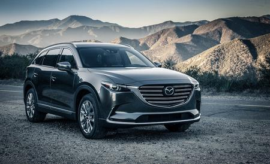
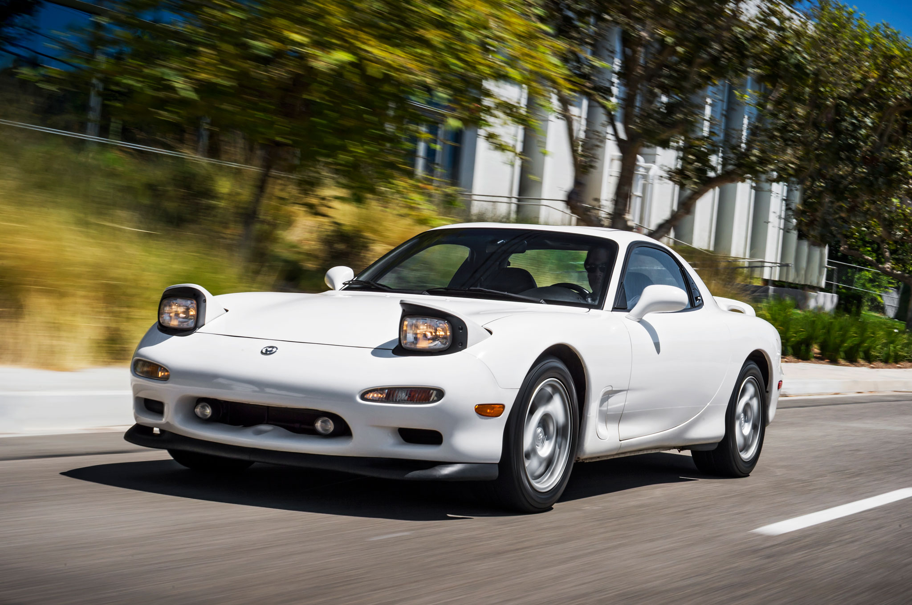
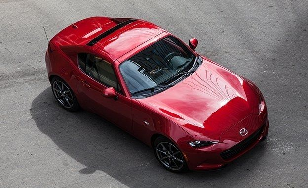
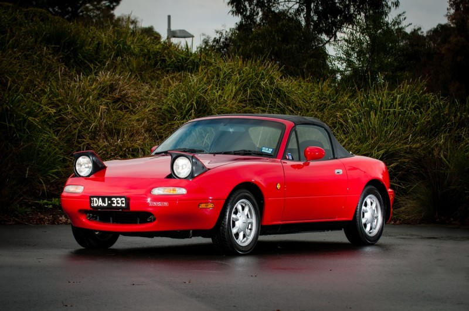

Mazda provides the ultimate automotive lifestyle for the sporty, upper-middle class mother of 2. This brand provides a wide range of what could be described generously as "Kind of fast mom cars."
Mazda has a dominance in a niche market of dad's who want a small break from the monotony of the minivan but still have to priortize seating, easily cleaned surfaces, and fuel economy.

Jokes aside, the Mazda RX-7 is the real beast that Mazda created during the 1990's.
The Mazda RX-7 used an entirely different engine known as a rotary engine.Hence the "R" in RX-7.
Instead of using the conventional set up such as cylinders, the Mazda RX-7 basically uses 2 dorito shaped "cylinders" that spin around powering the car.

The Mazda Miata THE roadster to get if you are looking for a lightweight, sporty, and generally fun driving experience.
Nothing compares to the simple Front Engine, Rear Wheel drive, drop top or hard top convertible in the "ND" Mazda Miata MX-5

However, the "NA" Miata will always be my favorite for its simple appearance and broad appeal that captivated everyone, thus saving the roadster bodystyle from extinction.